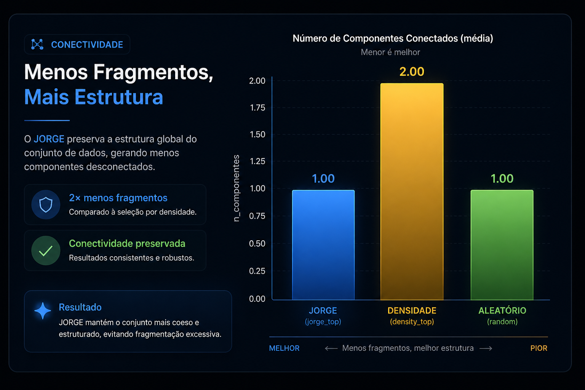

O JORGE Engine foi submetido a experimentos comparativos para avaliar conectividade, organização morfológica e separação entre estrutura, densidade e ruído.
Resultados preliminares indicam que o score estrutural captura propriedades relevantes do espaço, indo além de simples seleção por densidade.
A pergunta central: o JORGE apenas seleciona pontos densos ou realmente identifica organização estrutural?
Compara a seleção estrutural do JORGE contra seleção baseada apenas em densidade local.
Verifica se os padrões encontrados diferem de amostragem aleatória.
Avalia como o score estrutural se relaciona com regiões vazias, paredes, filamentos e nós.
Observa fragmentação, componentes conectados e coerência global do conjunto.
Gráficos tratados para leitura executiva: conclusão primeiro, detalhe técnico depois.

À medida que o score estrutural aumenta, o JORGE concentra regiões nodais e reduz progressivamente regiões vazias.
Isso sugere que o observável não está apenas ordenando pontos por quantidade, mas destacando regiões com maior relevância estrutural.

Na comparação por número médio de componentes conectados, o JORGE preserva uma estrutura mais coesa do que a seleção por densidade.
Para uso prático, isso significa menor fragmentação da leitura estrutural e maior continuidade do conjunto analisado.
Os resultados abaixo entram como base técnica da plataforma. Os gráficos tratados serão adicionados conforme forem preparados para leitura pública.
Avalia se a seleção estrutural preserva organização espacial além do que seria obtido por densidade simples ou amostragem aleatória.
gráfico em preparaçãoAnalisa autovalores pequenos do grafo para observar diferenças de conectividade e coerência entre métodos.
gráfico em preparaçãoObserva como os componentes conectados, grau médio, clustering e lambda2 variam conforme o grafo muda.
gráfico em preparaçãoVerifica quais classes morfológicas aparecem com maior frequência nos percentis mais altos de g_mag.
próximo gráfico recomendadoValida se o método responde à organização estrutural real e não apenas à presença de pontos ou flutuação aleatória.
resultado técnico disponívelTesta a mesma lógica estrutural em datasets de naturezas diferentes, preservando a leitura determinística.
em expansãoA próxima etapa é aplicar a leitura estrutural em dados reais de empresas, laboratórios e equipes técnicas.